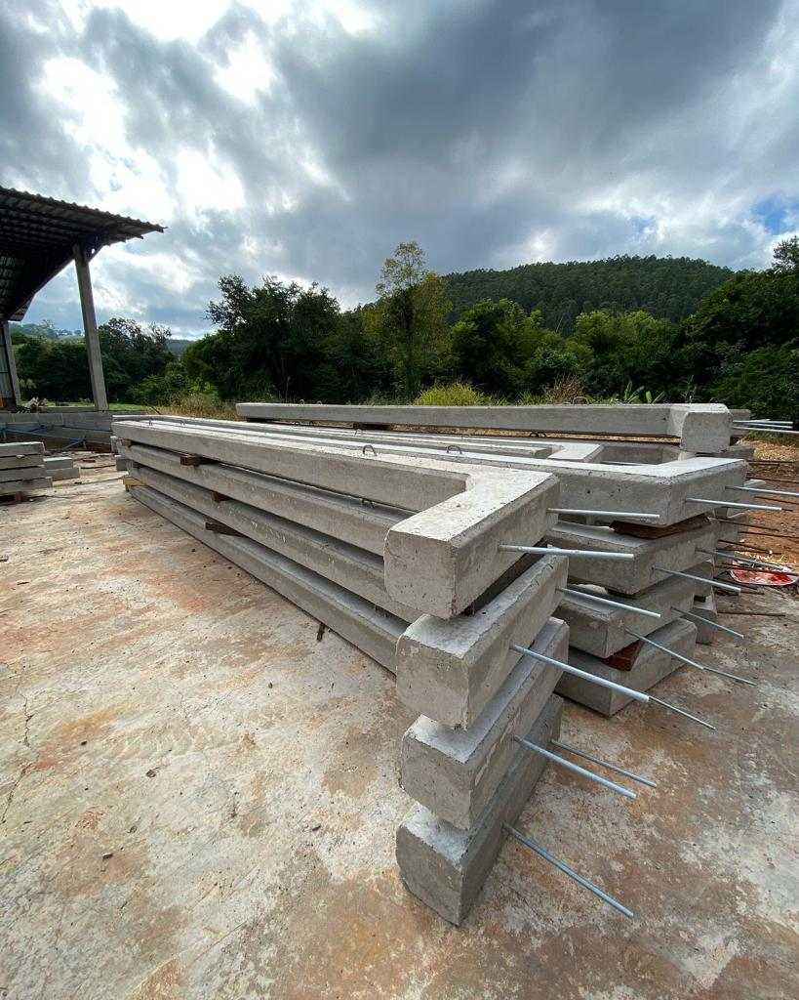

A Artefatos de Cimento Mascarello oferece o que há de melhor em
artefatos de concreto para construção civil. Trabalhamos com uma vasta linha de produtos, todos fabricados
com materiais de qualidade e procedência. São diversas opções em blocos, calhas, palanques, mourões,
filtros, fossas, tubos, estruturas pré-fabricadas, meio-fios, guias, pavers, lajotas e muito mais.
Sua obra merece produtos de qualidade. Entre em
contato e solicite um or√ßamento. üìûFone: (49) 99816-0086 | üìßE-mail:
artefatosmascarello@outlook.com
Tudo em Artefatos de Cimento
Fabricação e venda de blocos de concreto, pavers, lajotas, palanques, mourões, postes para varais, tubos de concreto, fossas pré-moldadas e filtros, estruturas pré-fabricadas para galpões, artefatos de cimento em geral.
Qualidade e Resistência
Nossos artefatos são produzidos com os melhores materiais do mercado, garantindo sempre a maior qualidade e um produto com mais resistência e durabilidade. Venha e confira nossa linha de artefatos de cimento.

Profissionalismo e Experiência
A Artefatos de Cimento Mascarello conta com uma equipe de profissionais altamente capacitados, com experiência na produção de artefatos de cimento de qualidade, sempre buscando atender as necessidades dos clientes.